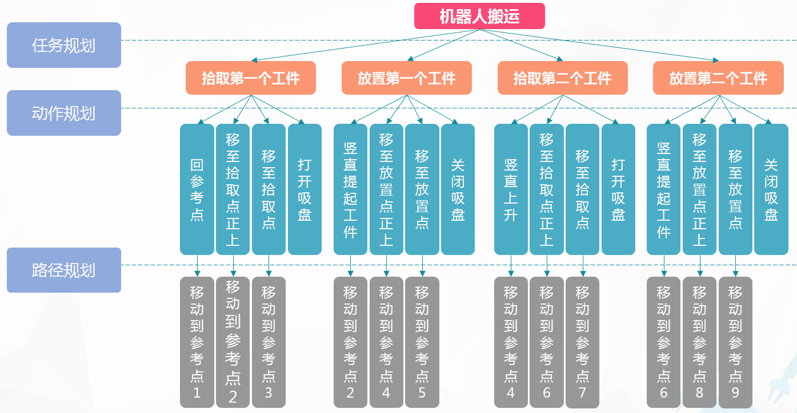
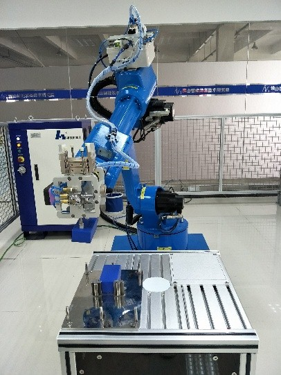

2.2搬运编程与操作
2.2.5搬运运动规划和示教前的准备
1、运动规划
机器人搬运的动作，可分解成为“抓取工件”、“移动工件”、“放下工件”等一系列子任务。可以进一步分解为“把吸盘移到工件上方”、“移动吸盘贴近工件”、“打开吸盘抓取工件”、“移动吸盘抬起工件”等一系列动作。

图2-19 搬运任务流程图

图2-20 搬运任务示意图
2、示教前的准备
（1）I/O配置
本任务中使用气动吸盘来抓取工件，气动吸盘的打开与关闭需通过I/O信号控制。HSR-JR612机器人控制系统提供了完备的 I/O通信接口，可以方便地与周边设备进行通信。本系统的 I/O板提供的常用信号处理有输入信号 X和输出信号 Y。输入 /输出主要是对这些输入 /输出状态进行管理和设置。
表2-3 I/O配置说明
| 序号 | PLC地址 | 状态 | 符号说明 | 控制指令 |
| 1 | Y[1,2] | ON/OFF | 吸盘吸取和释放 | Y[1,2]=ON/OFF |
（2）坐标系设定
本任务中使用气动吸盘抓取物品，将其放置到另外一托盘上，运动轨迹相对简单，示教取点较容易，所以可以在基坐标系下编程，不需要建立新的工具坐标系。